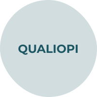

ATR, un cabinet d'audit agréé pour la certification MASE
Le cabinet ATR est agréé pour la réalisation des audits de certification MASE sur l'ensemble du territoire français, y compris en Guadeloupe, Martinique, Guyane, Saint-Martin et Saint-Barth.

Nos consultants sont donc les mieux placés pour vous accompagner
dans la mise en place de votre organisation afin de vous préparer à l'audit.
Diagnostic de votre organisation, diagnostic réglementaire, Document Unique, plan d'action, mise à disposition de formulaires et de documents, préparation des revues de direction ou bilans, conseils tout au long de la démarche, etc…
Le référentiel MASE
MASE est un système de management dont l'objectif est
l'amélioration permanente et continue des performances
Sécurité Santé Environnement des entreprises.
Plus qu'un référentiel ou une norme, le MASE est une base de
réflexion qui permet à l'entreprise de mieux structurer sa
démarche Santé Sécurité et Environnement. Elle vise à garantir
durablement la santé et la sécurité des salariés et à maîtriser
les impacts de votre activité sur l'environnement.
MASE permet une démarche de progrès simple et accessible à
toute entreprise, quelle que soit sa taille (Groupe, PME, TPE, artisan, indépendant, etc…).
Elle est possible sans distinction d'activités : industrie,
BTP, services, commerces, etc…
Appelez-nous, on s'occupera de tout
Contactez nos services, nous vous expliquerons et vous accompagnerons sur les différentes étapes de votre processus de certification.
- Élaboration de votre plan d'audit
- Analyse de vos documents à distance
- Audit de votre organisation en matière de santé sécurité et environnement
- Audit de vos activités opérationnelles (visites de chantiers)
- Rédaction du rapport
- Présentation du rapport en comité de pilotage MASE de votre région
- Le comité vous communique ensuite les résultats de votre audit.
Nous auditeurs sont professionels et certifiés
Nos auditeurs sont répartis sur l'ensemble du territoire :
- Haut-de-France
- Sud-Ouest
- Île-de-France
- Atlantique
- Normandie
- Est
- Rhône Alpes
- Guadeloupe
- Martinique
- Guyane
- Saint-Martin
- Saint-Barth
- Atlantique
- Antilles-Guyane
- Est
- Méditerranée Giphise
- Hauts-de-France
- Île-de-France - Normandie - Centre
- Rhône Alpes
- Sud-Ouest
- Côte d'Ivoire
- Sénégal
Nos auditeurs comprennent vos préoccupations. Ils sont certes certifiés auditeurs professionnels, mais ils ont aussi exercé des activités opérationnelles comme vous. Ils connaissent vos métiers et sont surtout basés dans toutes les régions de France y compris aux Antilles et en Guyane. Il y aura toujours un auditeur pas loin de votre entreprise.
Contactez-nous pour un audit MASEAudit internes
Notre cabinet est composé de consultants experts.
Nous pouvons réaliser vos audits internes afin de
vous aider dans la préparation de vos audits de certification.
Tous nos audits sont accompagnés de conseils et de pistes d'amélioration.
Nous avons les qualifications pour réaliser des audits internes combinés ou
distincts sur les référentiels suivants.
Notre devise
Être à votre écoute, être factuel dans notre approche et vous placer au centre du dispositif. Ce n'est pas à vous de comprendre l'auditeur, c'est à l'auditeur de vous comprendre.Nous nous y engageons…

Décidons ensemble d'une offre spécifique en vue de la réalisation
de votre audit de certification.
Nous pouvons aussi réaliser votre audit système interne en préparation
de votre audit de certification